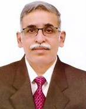

Prof. D V L N Somayajulu
DIRECTOR
0385 2445812
0385 2413031
director@nitmanipur.ac.in
Prof. Somayajulu has 35 years of experience in teaching, research, consultancy, and outreach works in the field of Computer Science and Engineering. He joined as Director of National Institute of Technology Manipur on June 1st, 2024. His academic career started in NIT(REC) Warangal in the month of September 1988 and promoted as Professor of Computer Science & Engineering in 2006.
Prof Somayajulu served various administrative positions at NIT Warangal such as the Head of the Department of CSE, Dean (Academic), ISEA coordinator, NMEICT Coordinator, BRICS Coordinator, and Professor-in-charge of MIS. He is a member of various accreditation committees, Technical Committees of TEQIP II World Bank project, and Board of Studies member for various Institutions at state and central Institutions/Universities.
Prof Somayajulu is instrumental in establishing Electronics and ICT Academy, sponsored by MeitY in imparting training of faculty across seven states and industry oriented certificate programmes in August 2015. He served as Chair of EICT Academy at NIT Warangal during 2015-2019. He is instrumental in starting B. Tech. in Artificial Intelligence and Data Science, M. Tech. and Ph.D. programmes at IIITDM Kurnool in the year 2019.
In the month of February 2019, he joined, on deputation, for the Post of Director, Indian Institute of Technology Design and Manufacturing Kurnool (IIITDM Kurnool). As Director of IIITDM Kurnool, he has established the campus with all modern classrooms and labs, hostels, seminar halls, adequate number of teaching and non-teaching and along with UG, PG and Ph.D programmes. Currently, under his directorship, IIITDM Kurnool is offering four UG Programmes with intake of 240, 3 B Tech Dual degree programme with intake of 60, 6 PG programmes with intake 0f 90, four minor programmes. Also he has established Samsung Innovation Campus Lab, Drone Studio and 5G Use case Laboratory sponsored under MeitY Scheme along with other labs in various departments as per scheme.
He has published more than 55 research papers in reputed journals and Conferences, guided 14 Ph.D students, conducted research and consultancy projects worth more than 300 lakhs, and received Global Food Basket (GFB)-2023 award under best Institution imparting technical education category from AP by Manufacturers Services and Marketing Entrepreneurs Chamber of Commerce (MSMECC), Vijayawada, Bharat Education Excellence award in 2023 by Brian-0 Vision, Best teacher award from NITW (2020), Best researcher award from NITW(2016), appreciation award from IEEE and IE(I) best Engineer of the year award (1996) for his credit.
Prof. D V L N Somayajulu also served as a) Director of IIITDM Kurnool during Feb 28, 2019 to June 8, 2024, ii) Director (Additional in-charge) of IIITDM Kanchipuram during the period 4th August 2021 to 11th October 2022 and iii) Director (Additional In-charge) of IIIT Sri City Chittoor during 23rd July 2023 to June 5, 2024.